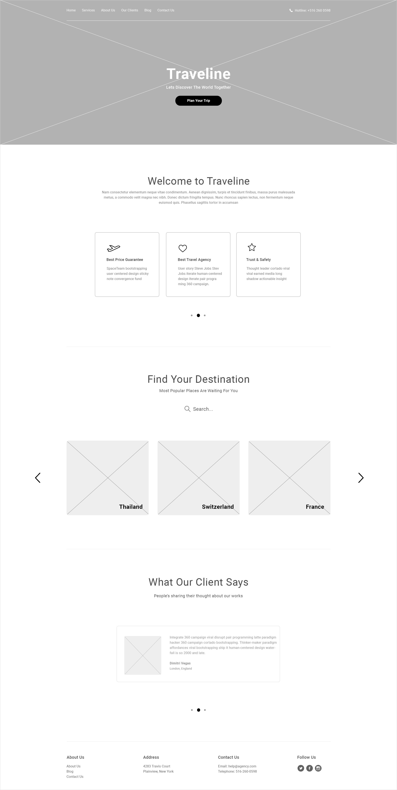
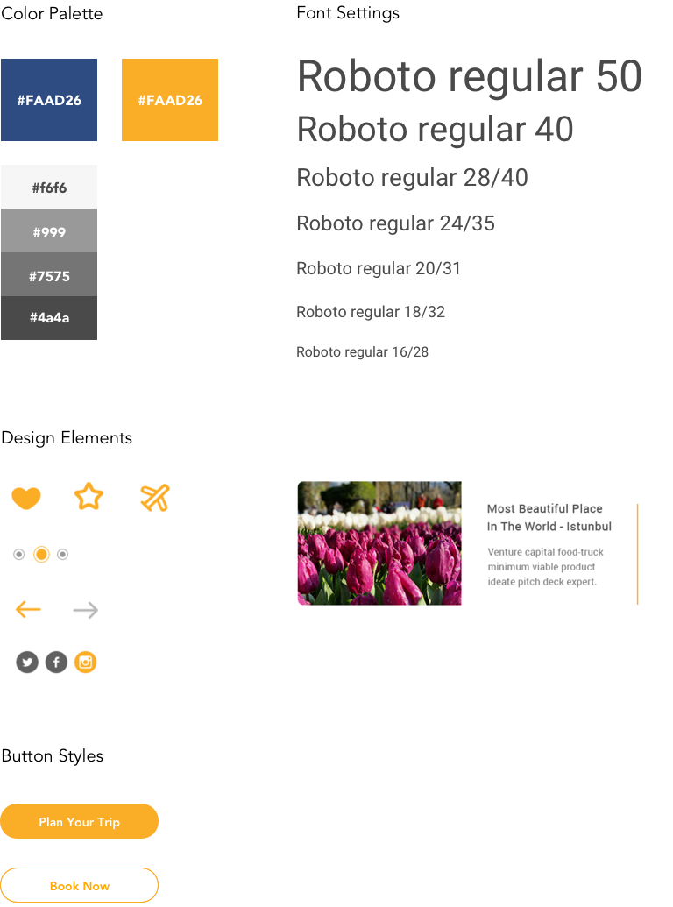

Traveline
Client: Traveline | Category: UI/UX Design

Overview
Traveline is a startup that wants to take part in the online travel industry. The company hired me to perform Market Research which involved defining their target audience, their Persona and competition and with this, be able to establish their Brand Identity, Style Guide and design their first Landing Page.
Objectives
Our immediate goals were to make sure with our first design piece, engage prospects, drive traffic, generate qualified leads by a minimum of 20% and raise brand awareness. For this purpose, it was agreed with the client, that before designing Traveline's website, we would develop a Landing Page, which would be the test sample that will become the Homepage and the main template to follow for all secondary pages.
Wireframes
Wireframes were used to test various ideas. It was of utter importance to test early to get important feedback in these first crucial stages. Wireframe testing prevented needless reworks and saved time, energy and resources. Providing a layout and usability features that produced full engagement.
Documentation
The Style Guide developed followed the company's established branding, focusing on a clean and concise layout, a vibrant color palette, a modern typography style and versatile design elements.
Results & Implementation
The results were focused on performing early-stage testing to identify any design and usability problems and revise this before such revisions became overly costly, as an estimated 50% of engineering time is spent doing rework that could have been avoided.
Another reason we tested our Landing page at early stages and continued throughout, was to help us acquire early revenue and customers, as testing showed us exactly which parts of the Landing Page frustrated our users and what kept them from converting. This way we were able to make changes that had the biggest impact on conversion.